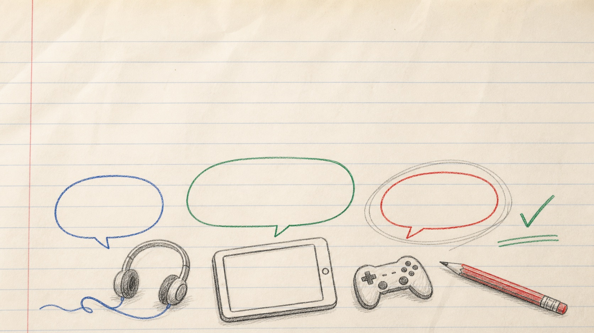

Before registration
“I was up really late playing last night.”
What would you say first?
Week 3
Children often mention online life in passing. You do not need a script or expert knowledge of the platform. One calm question can help you understand what the moment means to them.
Week 2 focused on making online life normal to talk about. This week is about what to do when an opening appears.

A useful pattern
The aim is not to turn every comment into a lesson. Notice the moment, ask one useful question and listen to what comes next.
Hear the online-life cue without assuming what it means.
Use one calm, open question that fits the moment.
Give the child room to explain without blame or surprise.
Use the school safeguarding procedure if a concern appears.
You are opening a conversation, not trying to solve the whole situation on the spot.
Practise
Read each moment and choose the response that best keeps the door open. You can change your answer after reading the feedback.
Moment 1 of 5
Before registration
What would you say first?
During a classroom conversation
Which response keeps the tone open?
A passing comment
What is the most useful first response?
Talking about a game
Which response shows calm curiosity?
Other pupils are nearby
What would be the most proportionate response?
Choose
The useful responses stayed calm, asked for context and left room for the child to decide what to say next.
Choose one phrase for this week
Which one could you use naturally?
Keep it light. Try the phrase once when an online-life moment appears.
Safeguarding
Stay calm and listen. Do not promise to keep the information secret and do not begin your own investigation. Follow your school’s child protection policy and report the concern to the DSL or deputy without delay.
A calm question can open the door. Once a concern appears, the school’s safeguarding procedure takes over.
This week
Use one calm question when it fits. You do not need to know the platform, and you do not need to solve the whole situation yourself.
Continue to Week 4